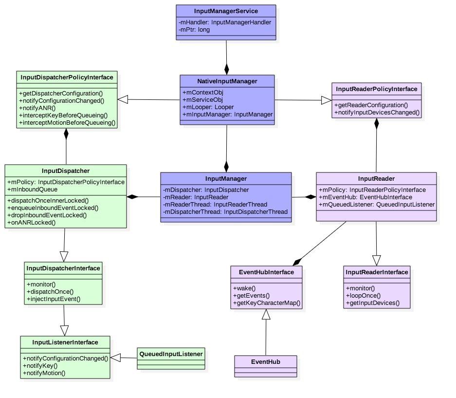

Input系统01-Input启动过程
前言¶
Input 系统是由上层的 InputManagerSerice 启动的，而上层的 InputManagerService 只是 Input 系统一小部分，而主要的功能是集中在 native 层，因此 InuptManagerService 这个系统服务并不能代表整个 Input 系统。 本文主要介绍 InputManagerSerice 启动过程，以及 InputFlinger 启动过程。
启动流程¶
system_server进程起来之后，会在 SystemServer.startOtherServices() 启动 InputManagerService。
frameworks/base/services/java/com/android/server/SystemServer.java
private void startOtherServices(@NonNull TimingsTraceAndSlog t) {
t.traceBegin("startOtherServices");
...
InputManagerService inputManager = null;
...
t.traceBegin("StartInputManagerService");
inputManager = new InputManagerService(context);
t.traceEnd();
...
ServiceManager.addService(Context.INPUT_SERVICE, inputManager,
/* allowIsolated= */ false, DUMP_FLAG_PRIORITY_CRITICAL);
...
t.traceBegin("StartInputManager");
inputManager.setWindowManagerCallbacks(wm.getInputManagerCallback());
inputManager.start();
t.traceEnd();
...
t.traceEnd(); // startOtherServices
}
这里主要做了三件事：
- 初始化 InputManagerService 并添加服务到 ServiceManager
- new InputManagerService(context)
- ServiceManager.addService(Context.INPUT_SERVICE, inputManager)
- inputManager.setWindowManagerCallbacks(wm.getInputManagerCallback());
- inputManager.start();
我们从这三个方面来分析一点一点分析：
初始化¶
InputManagerService¶
frameworks/base/services/core/java/com/android/server/input/InputManagerService.java
public InputManagerService(Context context) {
this(new Injector(context, DisplayThread.get().getLooper()));
}
@VisibleForTesting
static class Injector {
private final Context mContext;
private final Looper mLooper;
Injector(Context context, Looper looper) {
mContext = context;
mLooper = looper;
}
Context getContext() {
return mContext;
}
Looper getLooper() {
return mLooper;
}
NativeInputManagerService getNativeService(InputManagerService service) {
return new NativeInputManagerService.NativeImpl(service, mLooper.getQueue());
}
void registerLocalService(InputManagerInternal localService) {
LocalServices.addService(InputManagerInternal.class, localService);
}
}
@VisibleForTesting
InputManagerService(Injector injector) {
// The static association map is accessed by both java and native code, so it must be
// initialized before initializing the native service.
mStaticAssociations = loadStaticInputPortAssociations();
mContext = injector.getContext();
mHandler = new InputManagerHandler(injector.getLooper());
mNative = injector.getNativeService(this);
mSettingsObserver = new InputSettingsObserver(mContext, mHandler, this, mNative);
mKeyboardLayoutManager = new KeyboardLayoutManager(mContext, mNative, mDataStore,
injector.getLooper());
mBatteryController = new BatteryController(mContext, mNative, injector.getLooper());
mKeyboardBacklightController =
KEYBOARD_BACKLIGHT_CONTROL_ENABLED ? new KeyboardBacklightController(mContext,
mNative, mDataStore, injector.getLooper())
: new KeyboardBacklightControllerInterface() {};
mKeyRemapper = new KeyRemapper(mContext, mNative, mDataStore, injector.getLooper());
mUseDevInputEventForAudioJack =
mContext.getResources().getBoolean(R.bool.config_useDevInputEventForAudioJack);
Slog.i(TAG, "Initializing input manager, mUseDevInputEventForAudioJack="
+ mUseDevInputEventForAudioJack);
String doubleTouchGestureEnablePath = mContext.getResources().getString(
R.string.config_doubleTouchGestureEnableFile);
mDoubleTouchGestureEnableFile = TextUtils.isEmpty(doubleTouchGestureEnablePath) ? null :
new File(doubleTouchGestureEnablePath);
mVelocityTrackerStrategy = DeviceConfig.getProperty(
NAMESPACE_INPUT_NATIVE_BOOT, VELOCITYTRACKER_STRATEGY_PROPERTY);
injector.registerLocalService(new LocalService());
}
- mLooper mLooper 是 DisplayThread.get().getLooper()，也就是 “android.display” 线程的 Looper。
- mNative mNative 是 new NativeInputManagerService.NativeImpl(service, mLooper.getQueue());
用到 android.display 线程是为了显示小白点，鼠标指针等。
初始化 NativeInputManagerService¶
frameworks/base/services/core/java/com/android/server/input/InputManagerService.java
class NativeImpl implements NativeInputManagerService {
/** Pointer to native input manager service object, used by native code. */
@SuppressWarnings({"unused", "FieldCanBeLocal"})
private final long mPtr;
NativeImpl(InputManagerService service, MessageQueue messageQueue) {
mPtr = init(service, messageQueue);
}
private native long init(InputManagerService service, MessageQueue messageQueue);
}
这里就会调到 jni 的 com_android_server_input_InputManagerService.cpp
- mPtr 是 Native层的NativeInputManager对象
nativeInit¶
frameworks/base/services/core/jni/com_android_server_input_InputManagerService.cpp
static const JNINativeMethod gInputManagerMethods[] = {
/* name, signature, funcPtr */
{"init",
"(Lcom/android/server/input/InputManagerService;Landroid/os/"
"MessageQueue;)J",
(void*)nativeInit},
};
static jlong nativeInit(JNIEnv* env, jclass /* clazz */, jobject serviceObj,
jobject messageQueueObj) {
sp<MessageQueue> messageQueue = android_os_MessageQueue_getMessageQueue(env, messageQueueObj);
if (messageQueue == nullptr) {
jniThrowRuntimeException(env, "MessageQueue is not initialized.");
return 0;
}
static std::once_flag nativeInitialize;
NativeInputManager* im = nullptr;
std::call_once(nativeInitialize, [&]() {
// Create the NativeInputManager, which should not be destroyed or deallocated for the
// lifetime of the process.
im = new NativeInputManager(serviceObj, messageQueue->getLooper());
});
LOG_ALWAYS_FATAL_IF(im == nullptr, "NativeInputManager was already initialized.");
return reinterpret_cast<jlong>(im);
}
- serviceObj 就是就是 java 层的 InputManagerService
- messageQueueObj 就是 “android.display” 线程 Looper 的 MessageQueue。
- mPtr 指向Native层的NativeInputManager对象
NativeInputManager¶
frameworks/base/services/core/jni/com_android_server_input_InputManagerService.cpp
class NativeInputManager : public virtual InputReaderPolicyInterface,
public virtual InputDispatcherPolicyInterface,
public virtual PointerControllerPolicyInterface {
...
};
NativeInputManager::NativeInputManager(jobject serviceObj, const sp<Looper>& looper)
: mLooper(looper), mInteractive(true) {
JNIEnv* env = jniEnv();
mServiceObj = env->NewGlobalRef(serviceObj);
//注意传进去的 this 就是 NativeInputManager 对象
InputManager* im = new InputManager(this, *this);
mInputManager = im;
defaultServiceManager()->addService(String16("inputflinger"), im);
}
-
mServiceObj 指向Java层的IMS对象
-
mInputManager 就是inputflinger的InputManager，文件位置 frameworks/native/services/inputflinger/InputManager.cpp
在 ServiceManager 中添加一个叫做 inputflinger 的服务，其代理对象是 BnInputFlinger；也就是frameworks/native/libs/input/android/os/IInputFlinger.aidl 。
注意¶
创建 InputManager 使用了两个 this 参数，这里介绍下 NativeInputManager 和 InputManager 的结构图。
classDiagram
class InputReaderPolicyInterface {
<<interface>>
}
class InputDispatcherPolicyInterface {
<<interface>>
}
class PointerControllerPolicyInterface {
<<interface>>
}
class NativeInputManager {
-jobject mServiceObj
-sp<InputManager> mInputManager
}
InputReaderPolicyInterface <|.. NativeInputManager
InputDispatcherPolicyInterface <|.. NativeInputManager
PointerControllerPolicyInterface <|.. NativeInputManager
InputManager 构造函数需要的两个接口正好是由 NativeInputManager 实现的。
初始化 InputManager¶
frameworks/native/services/inputflinger/InputManager.cpp
/**
* The event flow is via the "InputListener" interface, as follows:
* InputReader -> UnwantedInteractionBlocker -> InputProcessor -> InputDispatcher
*/
InputManager::InputManager(const sp<InputReaderPolicyInterface>& readerPolicy,
InputDispatcherPolicyInterface& dispatcherPolicy) {
mDispatcher = createInputDispatcher(dispatcherPolicy);
mProcessor = std::make_unique<InputProcessor>(*mDispatcher);
mBlocker = std::make_unique<UnwantedInteractionBlocker>(*mProcessor);
mReader = createInputReader(readerPolicy, *mBlocker);
}
-
创建 InputDispatcher 对象，使用 InputDispatcherPolicyInterface 接口
- mPolicy: InputDispatcherPolicyInterface ，也就是 com_android_server_input_InputManagerService 里的 NativeInputManager
- InputDispatcher 的 .h "class InputDispatcher : public android::InputDispatcherInterface"
-
创建 InputReader 对象，使用 InputReaderPolicyInterface 、InputListenerInterface
- mPolicy: InputReaderPolicyInterface ，也就是 com_android_server_input_InputManagerService 里的 NativeInputManager
- mQueuedListener：跟 InputDispatcher 关联
classDiagram
class InputManagerInterface {
<<interface>>
}
class BnInputFlinger {
<<interface>>
}
class InputManager {
InputManager(const sp<InputReaderPolicyInterface>& readerPolicy, InputDispatcherPolicyInterface& dispatcherPolicy)
}
InputManagerInterface <|.. InputManager
BnInputFlinger <|.. InputManager
从前面可知，InputManager 构造函数需要的两个接口正好是由 NativeInputManager 实现的。而具体使用这两个接口的不是 InputManager，而是它的子模块。这些子模块都是在 InputManager 的构造函数中创建的。
inputflinger 服务ipc接口¶
通过 adb shell service list | grep inputflinger 命令可以看到，在 ServiceManager 中存在名为 inputflinger 的服务，其接口为 android.os.IInputFlinger 。
android.os.IInputFlinger 的原文件是 frameworks/native/libs/input/android/os/IInputFlinger.aidl 。
frameworks/native/services/inputflinger/InputManager.h
#include <android/os/BnInputFlinger.h>
using android::os::BnInputFlinger;
class InputManager : public InputManagerInterface, public BnInputFlinger {
...
public:
...
binder::Status createInputChannel(const std::string& name, InputChannel* outChannel) override;
binder::Status removeInputChannel(const sp<IBinder>& connectionToken) override;
binder::Status setFocusedWindow(const gui::FocusRequest&) override;
...
};
从代码里看到的是 BnInputFlinger ，其实是因为在系统编译的过程中会通过 system/tools/aidl/build/aidl_gen_rule.go 里的规则 aidlCppRule 把 aidl 编译成 .h
编译出来的 BnInputFlinger.h 文件如下：
#pragma once
#include <binder/IInterface.h>
#include <android/os/IInputFlinger.h>
#include <android/os/BnInputFlinger.h>
#include <binder/Delegate.h>
namespace android {
namespace os {
class BnInputFlinger : public ::android::BnInterface<IInputFlinger> {
public:
static constexpr uint32_t TRANSACTION_createInputChannel = ::android::IBinder::FIRST_CALL_TRANSACTION + 0;
static constexpr uint32_t TRANSACTION_removeInputChannel = ::android::IBinder::FIRST_CALL_TRANSACTION + 1;
static constexpr uint32_t TRANSACTION_setFocusedWindow = ::android::IBinder::FIRST_CALL_TRANSACTION + 2;
explicit BnInputFlinger();
::android::status_t onTransact(uint32_t _aidl_code, const ::android::Parcel& _aidl_data, ::android::Parcel* _aidl_reply, uint32_t _aidl_flags) override;
}; // class BnInputFlinger
class IInputFlingerDelegator : public BnInputFlinger {
public:
explicit IInputFlingerDelegator(const ::android::sp<IInputFlinger> &impl) : _aidl_delegate(impl) {}
::android::sp<IInputFlinger> getImpl() { return _aidl_delegate; }
::android::binder::Status createInputChannel(const ::std::string& name, ::android::InputChannel* _aidl_return) override {
return _aidl_delegate->createInputChannel(name, _aidl_return);
}
::android::binder::Status removeInputChannel(const ::android::sp<::android::IBinder>& connectionToken) override {
return _aidl_delegate->removeInputChannel(connectionToken);
}
::android::binder::Status setFocusedWindow(const ::android::gui::FocusRequest& request) override {
return _aidl_delegate->setFocusedWindow(request);
}
private:
::android::sp<IInputFlinger> _aidl_delegate;
}; // class IInputFlingerDelegator
} // namespace os
} // namespace android
启动线程¶
InputManagerService.start()¶
frameworks/base/services/core/java/com/android/server/input/InputManagerService.java
public void start() {
Slog.i(TAG, "Starting input manager");
mNative.start();
// Add ourselves to the Watchdog monitors.
Watchdog.getInstance().addMonitor(this);
}
根据上文可知，这里会调到 JNI ，也就是 com_android_server_input_InputManagerService.cpp
nativeStart()¶
frameworks/base/services/core/jni/com_android_server_input_InputManagerService.cpp
static const JNINativeMethod gInputManagerMethods[] = {
/* name, signature, funcPtr */
{"init",
"(Lcom/android/server/input/InputManagerService;Landroid/os/"
"MessageQueue;)J",
(void*)nativeInit},
{"start", "()V", (void*)nativeStart},
}
int register_android_server_InputManager(JNIEnv* env) {
int res = jniRegisterNativeMethods(env,
"com/android/server/input/"
"NativeInputManagerService$NativeImpl",
gInputManagerMethods, NELEM(gInputManagerMethods));
(void)res; // Faked use when LOG_NDEBUG.
LOG_FATAL_IF(res < 0, "Unable to register native methods.");
FIND_CLASS(gNativeInputManagerServiceImpl.clazz,
"com/android/server/input/"
"NativeInputManagerService$NativeImpl");
gNativeInputManagerServiceImpl.clazz =
jclass(env->NewGlobalRef(gNativeInputManagerServiceImpl.clazz));
gNativeInputManagerServiceImpl.mPtr =
env->GetFieldID(gNativeInputManagerServiceImpl.clazz, "mPtr", "J");
...
}
static void nativeStart(JNIEnv* env, jobject nativeImplObj) {
NativeInputManager* im = getNativeInputManager(env, nativeImplObj);
status_t result = im->getInputManager()->start();
if (result) {
jniThrowRuntimeException(env, "Input manager could not be started.");
}
}
static NativeInputManager* getNativeInputManager(JNIEnv* env, jobject clazz) {
return reinterpret_cast<NativeInputManager*>(
env->GetLongField(clazz, gNativeInputManagerServiceImpl.mPtr));
}
这里的 mPtr 就是 IMS 的 mPtr，也就是之前 JNI 返回的 Native层的 NativeInputManager 对象。
InputManager.start();¶
frameworks/native/services/inputflinger/InputManager.cpp
status_t InputManager::start() {
status_t result = mDispatcher->start();
if (result) {
ALOGE("Could not start InputDispatcher thread due to error %d.", result);
return result;
}
result = mReader->start();
if (result) {
ALOGE("Could not start InputReader due to error %d.", result);
mDispatcher->stop();
return result;
}
return OK;
}
先后启动 “InputDispatcher” 线程 和 “InputReader” 线程。
InputDispatcher.start()¶
frameworks/native/services/inputflinger/dispatcher/InputDispatcher.cpp
status_t InputDispatcher::start() {
if (mThread) {
return ALREADY_EXISTS;
}
mThread = std::make_unique<InputThread>(
"InputDispatcher", [this]() { dispatchOnce(); }, [this]() { mLooper->wake(); });
return OK;
}
创建一个线程，然后循环调用 dispatchOnce()。
InputReader.start()¶
frameworks/native/services/inputflinger/reader/InputReader.cpp
status_t InputReader::start() {
if (mThread) {
return ALREADY_EXISTS;
}
mThread = std::make_unique<InputThread>(
"InputReader", [this]() { loopOnce(); }, [this]() { mEventHub->wake(); });
return OK;
}
创建一个线程，然后循环调用 loopOnce() 函数。
线程优先级¶
有些厂商会改变 “InputDispatcher” 线程 和 “InputReader” 线程的优先级，如：
struct sched_param param = {0};
int sched_policy = SCHED_FIFO;
param.sched_priority = 1;
sched_setscheduler(0, sched_policy, ¶m);
IMS和WMS¶
InputManagerService.setWindowManagerCallbacks()¶
在 SystemServer.startOtherServices() 时，我们提到过
- WindowManagerCallbacks 是 wm.getInputManagerCallback()
我们继续看 InputManagerService 拿到 WindowManagerCallbacks 后，都做了什么。
frameworks/base/services/core/java/com/android/server/input/InputManagerService.java
public class InputManagerService extends IInputManager.Stub
implements Watchdog.Monitor {
private WindowManagerCallbacks mWindowManagerCallbacks;
public void setWindowManagerCallbacks(WindowManagerCallbacks callbacks) {
if (mWindowManagerCallbacks != null) {
unregisterLidSwitchCallbackInternal(mWindowManagerCallbacks);
}
mWindowManagerCallbacks = callbacks;
registerLidSwitchCallbackInternal(mWindowManagerCallbacks);
}
@SuppressWarnings("unused")
private int interceptKeyBeforeQueueing(KeyEvent event, int policyFlags) {
synchronized (mFocusEventDebugViewLock) {
if (mFocusEventDebugView != null) {
mFocusEventDebugView.reportEvent(event);
}
}
return mWindowManagerCallbacks.interceptKeyBeforeQueueing(event, policyFlags);
}
// Native callback.
@SuppressWarnings("unused")
private int interceptMotionBeforeQueueingNonInteractive(int displayId,
long whenNanos, int policyFlags) {
return mWindowManagerCallbacks.interceptMotionBeforeQueueingNonInteractive(
displayId, whenNanos, policyFlags);
}
// Native callback.
@SuppressWarnings("unused")
private long interceptKeyBeforeDispatching(IBinder focus, KeyEvent event, int policyFlags) {
return mWindowManagerCallbacks.interceptKeyBeforeDispatching(focus, event, policyFlags);
}
// Native callback.
@SuppressWarnings("unused")
private KeyEvent dispatchUnhandledKey(IBinder focus, KeyEvent event, int policyFlags) {
return mWindowManagerCallbacks.dispatchUnhandledKey(focus, event, policyFlags);
}
}
这里可以看到 Native 调到 InputManagerService.interceptKeyBeforeQueueing() 后，会通过 mWindowManagerCallbacks.interceptKeyBeforeQueueing() 回调回去。
初始化 WindowManagerService¶
这 system_server 进程启动时，其跟WMS关键部分较完整代码如：
frameworks/base/services/java/com/android/server/SystemServer.java
private void startOtherServices(@NonNull TimingsTraceAndSlog t) {
t.traceBegin("startOtherServices");
...
WindowManagerService wm = null;
...
wm = WindowManagerService.main(context, inputManager, !mFirstBoot,
new PhoneWindowManager(), mActivityManagerService.mActivityTaskManager);
...
t.traceBegin("StartInputManager");
inputManager.setWindowManagerCallbacks(wm.getInputManagerCallback());
inputManager.start();
t.traceEnd();
...
t.traceEnd(); // startOtherServices
}
- wm 是 WindowManagerService
frameworks/base/services/core/java/com/android/server/wm/WindowManagerService.java
public class WindowManagerService extends IWindowManager.Stub
implements Watchdog.Monitor, WindowManagerPolicy.WindowManagerFuncs {
private WindowManagerService(Context context, InputManagerService inputManager,
boolean showBootMsgs, WindowManagerPolicy policy, ActivityTaskManagerService atm,
DisplayWindowSettingsProvider displayWindowSettingsProvider,
Supplier<SurfaceControl.Transaction> transactionFactory,
Function<SurfaceSession, SurfaceControl.Builder> surfaceControlFactory) {
mInputManager = inputManager; // Must be before createDisplayContentLocked.
...
mPolicy = policy;
...
}
public static WindowManagerService main(final Context context, final InputManagerService im,
final boolean showBootMsgs, WindowManagerPolicy policy,
ActivityTaskManagerService atm) {
return main(context, im, showBootMsgs, policy, atm, new DisplayWindowSettingsProvider(),
SurfaceControl.Transaction::new, SurfaceControl.Builder::new);
}
@VisibleForTesting
public static WindowManagerService main(final Context context, final InputManagerService im,
final boolean showBootMsgs, WindowManagerPolicy policy, ActivityTaskManagerService atm,
DisplayWindowSettingsProvider displayWindowSettingsProvider,
Supplier<SurfaceControl.Transaction> transactionFactory,
Function<SurfaceSession, SurfaceControl.Builder> surfaceControlFactory) {
final WindowManagerService[] wms = new WindowManagerService[1];
DisplayThread.getHandler().runWithScissors(() ->
wms[0] = new WindowManagerService(context, im, showBootMsgs, policy, atm,
displayWindowSettingsProvider, transactionFactory,
surfaceControlFactory), 0);
return wms[0];
}
public InputManagerCallback getInputManagerCallback() {
return mInputManagerCallback;
}
final InputManagerCallback mInputManagerCallback = new InputManagerCallback(this);
}
- mPolicy 是 PhoneWindowManager
- mInputManager 是 InputManagerService
- new InputManagerCallback(this) 传的 this 是 WindowManagerService
InputManagerCallback¶
frameworks/base/services/core/java/com/android/server/wm/InputManagerCallback.java
final class InputManagerCallback implements InputManagerService.WindowManagerCallbacks {
private static final String TAG = TAG_WITH_CLASS_NAME ? "InputManagerCallback" : TAG_WM;
private final WindowManagerService mService;
public InputManagerCallback(WindowManagerService service) {
mService = service;
}
...
/**
* Provides an opportunity for the window manager policy to intercept early key
* processing as soon as the key has been read from the device.
*/
@Override
public int interceptKeyBeforeQueueing(KeyEvent event, int policyFlags) {
return mService.mPolicy.interceptKeyBeforeQueueing(event, policyFlags);
}
/** {@inheritDoc} */
@Override
public int interceptMotionBeforeQueueingNonInteractive(int displayId, long whenNanos,
int policyFlags) {
return mService.mPolicy.interceptMotionBeforeQueueingNonInteractive(
displayId, whenNanos, policyFlags);
}
/**
* Provides an opportunity for the window manager policy to process a key before
* ordinary dispatch.
*/
@Override
public long interceptKeyBeforeDispatching(
IBinder focusedToken, KeyEvent event, int policyFlags) {
return mService.mPolicy.interceptKeyBeforeDispatching(focusedToken, event, policyFlags);
}
/**
* Provides an opportunity for the window manager policy to process a key that
* the application did not handle.
*/
@Override
public KeyEvent dispatchUnhandledKey(
IBinder focusedToken, KeyEvent event, int policyFlags) {
return mService.mPolicy.dispatchUnhandledKey(focusedToken, event, policyFlags);
}
/** Callback to get pointer layer. */
@Override
public int getPointerLayer() {
return mService.mPolicy.getWindowLayerFromTypeLw(WindowManager.LayoutParams.TYPE_POINTER)
* WindowManagerPolicyConstants.TYPE_LAYER_MULTIPLIER
+ WindowManagerPolicyConstants.TYPE_LAYER_OFFSET;
}
...
}
- mService 是WindowManagerService
- mService.mPolicy 就是 PhoneWindowManager
PhoneWindowManager¶
frameworks/base/services/core/java/com/android/server/policy/PhoneWindowManager.java
public class PhoneWindowManager implements WindowManagerPolicy {
@Override
public int interceptKeyBeforeQueueing(KeyEvent event, int policyFlags) {
...
}
@Override
public int interceptMotionBeforeQueueingNonInteractive(int displayId, long whenNanos,
int policyFlags) {
...
}
@Override
public long interceptKeyBeforeDispatching(IBinder focusedToken, KeyEvent event,
int policyFlags) {
...
}
@Override
public KeyEvent dispatchUnhandledKey(IBinder focusedToken, KeyEvent event, int policyFlags) {
...
}
}
分析到这里，我们就知道了 IMS 怎么和 WMS 交互了，其实主要就是 IMS 跟 WMS 的 PhoneWindowManager 交互。
比如 PhoneWindowManager.interceptKeyBeforeQueueing() 就是在事件入队列前拦截按键事件，也就是如果这个阶段被拦截，事件将不会再被分发。比如 POWER 按键。
附¶
好了，现在我们知道 InputManagerService -> InputManagerCallback(WindowManagerCallbacks) -> PhoneWindowManager。 那 native 层的 InputFlinger 是如何调到 InputManagerService 的呢。我们就以 interceptKeyBeforeQueueing() 接口为例。
InputDispatcher::notifyKey¶
frameworks/native/services/inputflinger/dispatcher/InputDispatcher.cpp
void InputDispatcher::notifyKey(const NotifyKeyArgs& args) {
...
uint32_t policyFlags = args.policyFlags;
...
KeyEvent event;
event.initialize(args.id, args.deviceId, args.source, args.displayId, INVALID_HMAC, args.action,
flags, keyCode, args.scanCode, metaState, repeatCount, args.downTime,
args.eventTime);
mPolicy.interceptKeyBeforeQueueing(event, /*byref*/ policyFlags);
}
前面提到过 mPolicy 是 InputDispatcherPolicyInterface ，也就是 com_android_server_input_InputManagerService 里的 NativeInputManager
NativeInputManager::interceptKeyBeforeQueueing¶
frameworks/base/services/core/jni/com_android_server_input_InputManagerService.cpp
void NativeInputManager::interceptKeyBeforeQueueing(const KeyEvent& keyEvent,
uint32_t& policyFlags) {
ATRACE_CALL();
// Policy:
// - Ignore untrusted events and pass them along.
// - Ask the window manager what to do with normal events and trusted injected events.
// - For normal events wake and brighten the screen if currently off or dim.
const bool interactive = mInteractive.load();
if (interactive) {
policyFlags |= POLICY_FLAG_INTERACTIVE;
}
if ((policyFlags & POLICY_FLAG_TRUSTED) == 0) {
if (interactive) {
policyFlags |= POLICY_FLAG_PASS_TO_USER;
}
return;
}
const nsecs_t when = keyEvent.getEventTime();
JNIEnv* env = jniEnv();
ScopedLocalRef<jobject> keyEventObj(env, android_view_KeyEvent_fromNative(env, keyEvent));
if (!keyEventObj.get()) {
ALOGE("Failed to obtain key event object for interceptKeyBeforeQueueing.");
return;
}
jint wmActions = env->CallIntMethod(mServiceObj, gServiceClassInfo.interceptKeyBeforeQueueing,
keyEventObj.get(), policyFlags);
if (checkAndClearExceptionFromCallback(env, "interceptKeyBeforeQueueing")) {
wmActions = 0;
}
android_view_KeyEvent_recycle(env, keyEventObj.get());
handleInterceptActions(wmActions, when, /*byref*/ policyFlags);
}
前面提到过：mServiceObj 指向Java层的IMS对象。
接着看 gServiceClassInfo.interceptKeyBeforeQueueing ，如下：
#define GET_METHOD_ID(var, clazz, methodName, methodDescriptor) \
var = env->GetMethodID(clazz, methodName, methodDescriptor); \
LOG_FATAL_IF(! (var), "Unable to find method " methodName);
jclass clazz;
FIND_CLASS(clazz, "com/android/server/input/InputManagerService");
gServiceClassInfo.clazz = reinterpret_cast<jclass>(env->NewGlobalRef(clazz));
GET_METHOD_ID(gServiceClassInfo.interceptKeyBeforeQueueing, clazz,
"interceptKeyBeforeQueueing", "(Landroid/view/KeyEvent;I)I");
所以这里可以看出 gServiceClassInfo.interceptKeyBeforeQueueing 其实就是 InputManagerService.interceptKeyBeforeQueueing()。
这样就可以通过 cpp 调到了 Java 层。
到这里，我们已经知道了 input 系统中，Java 是如何调到 cpp，也知道了 cpp 是如何调到 Java 层。
总结¶

- InputManagerService
位于 Java 层的 InputManagerService.java 文件。
- 其成员 mPtr 指向 Native 层的 NativeInputManager 对象。
- NativeInputManager
位于Native层的com_android_server_input_InputManagerService.cpp文件。
- 其成员 mServiceObj 指向 Java 层的 InputManagerService 对象；
- 其成员 mLooper 是指 android.display 线程的 Looper。
- InputManager
位于 InputFlinger 中的 InputManager.cpp 文件。
- InputDispatcher 和 InputReader 的成员变量 mPolicy 都是指 NativeInputManager 对象；
- InputReader 的成员 mQueuedListener ，数据类型为 QueuedInputListener；通过其内部成员变量mInnerListener指向InputDispatcher对象。这便是InputReader跟InputDispatcher交互的中间枢纽。